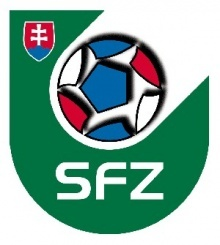

por Pedro Henrique B. N. Prado

Estreante em Copas, a Eslováquia surpreendeu ao liderar o Grupo 3 das eliminatórias europeias e por consequência eliminar sua mais badalada irmã República Tcheca. Após a dissolução da Tchecoslováquia, em 1993, os tchecos estiveram presentes em todas as Eurocopas e ainda disputaram o Mundial de 2006, na Alemanha. Os eslovacos só agora começam a ter destaque.
A campanha nas eliminatórias teve sete vitórias, um empate e duas derrotas. Jogadores como o zagueiro Skrtel, do Liverpool, e o meia Hamsik, do Napoli e pretendido pelo Chelsea, despontam como destaques da equipe eslovaca. Sestak, do Bochum, autor de seis gols nas eliminatórias, foi o artilheiro da equipe no torneio.
Após as eliminatórias, a Eslováquia esteve regular nos dois amistosos que disputou, ambos em casa: primeiro venceu os Estados Unidos (1 a 0) e depois caiu diante da seleção chilena (2 a 1).